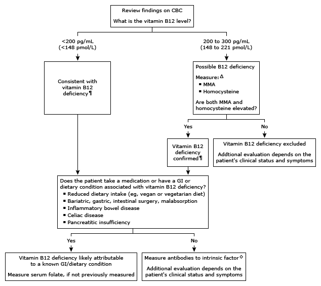

CBC: complete blood count; MMA: methylmalonic acid; GI: gastrointestinal.
* The normal vitamin B12 reference range is usually >300 pg/mL (>221 pmol/L). Interpretation of a specific abnormal test result should be based upon the reference range reported with that result.
¶ A diagnosis of B12 deficiency does not eliminate the possibility of concomitant folate deficiency or the possibility of coexisting causes of anemia.
Δ MMA and homocysteine are intermediates in vitamin B12 and folate metabolism.
◊ Testing for autoantibodies to intrinsic factor is used to identify pernicious anemia.